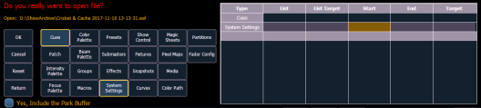

If you select the {Advanced} button in the partial show opening screen, you will have the opportunity to load partial components from the show file and be able to specify the desired location of those partial components in the new show file.
CAUTION: On a partial show open, if any record targets are not opened, any existing data of that type will be cleared from the console. To merge show data, merge should be used. See Merging Show Files .
For example, you could specify only cues 5-10 from cue list 2 and load them as cues 20-25 in cue list 7 in the new show. You could also specify only specific palettes, presets, effects, and so on. To see the complete list of show components, press the {Advanced} key in the partial show loading screen.

As you specify components, they are added to a table in the CIA. In the table, fields with a dark background may be edited, fields with a light gray background do not apply to that component. For each component in the list, you can specify the desired range by pressing the proper area in the table and entering numbers from the keypad. The columns in the table are:
Note: In the {Advanced} view, you can use the [Thru] key to jump to the End column and [At] to jump to the Target column.
To open only partial components from a show file:
You may exit the partial show load screen at any time by pressing the {Cancel} button. This will return you to the browser.
You may clear all selected components from the table at any time by pressing the {Reset} button.
You may exit the advanced loading screen at any time by pressing the {Advanced} button. This will return you to the general partial show load screen.
Note: Media is imported gobo and magic sheet images, and will be included by default when you select Patch, Fixtures, or Magic Sheets.
You have the option to selectively open partial patch information or fixtures into a show file by selecting the {Advanced} button in the partial show opening screen. Select {Patch} or {Fixtures}.
Note: It is important to remember that on a partial patch open, if any record targets are not opened, any existing data of that type will be cleared from the console. To keep that data, merge should be used.
You can specify the desired range by selecting the proper area in the table and entering numbers from the keypad. The columns in the table that relate to patch are: